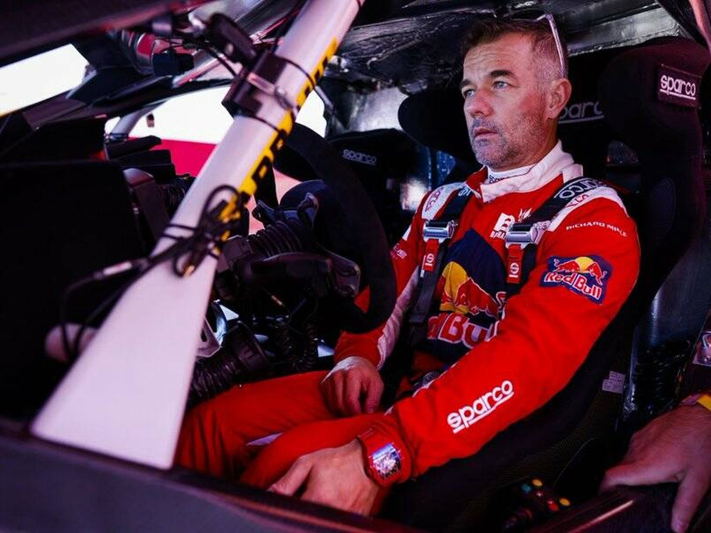

Leyenda del Campeonato Mundial de Rally (WRC)
Sébastien Loeb, nacido el 26 de febrero de 1974 en Haguenau, Alsacia, es un destacado piloto francés de automovilismo. Su carrera se ha centrado principalmente en el rally, donde ha logrado un récord de nueve campeonatos mundiales consecutivos entre 2004 y 2012. Además, ha sido subcampeón en 2003 y ha participado en el Rally Dakar, alcanzando el segundo lugar en 2017 y 2022. Loeb también ha sido campeón de la Extreme E en 2022 y ha participado en otras disciplinas automovilísticas, como el Campeonato Mundial de Turismos y el Rallycross. Su debut en los rallies fue en 1997, y ha acumulado numerosos récords en el Campeonato Mundial de Rally, incluyendo más de ochenta victorias y ciento dieciocho podios.

Imagen de Sébastien Loeb durante competición